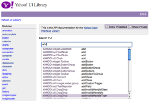

<?php 
$title="Yahoo! UI Library: YUI Doc";
$section="yuidoc";
$component="YUI Doc";
$highlightSyntax = true;
$releasenotes = true;
include "../inc/header.inc";
?>

<div id="yui-main">
<div class="yui-b">
  <div class="yui-ge">
      <div class="yui-u first">

<div id="promo" class="component">
    <h1>Yahoo! UI Library: <?php echo $component; ?></h1>
    <p>YUI Doc is a Python application used at build time to generate API documentation for JavaScript code.  YUI Doc is comment-driven and supports a wide range of JavaScript coding styles. The output of YUI Doc is API documentation formatted as a set of HTML pages including information about methods, properties, custom events and inheritance for JavaScript objects. YUI Doc was written for the YUI Project by Adam Moore; it uses YUI JavaScript and CSS in the generated files (primarily for AutoComplete-driven API instant search); and it supports common YUI conventions like <a href="http://developer.yahoo.com/yui/event/#customevent">Custom Events</a>. That said, it can be used easily and productively on non-YUI code.</p>
	
	<p></p>
	
    <p>YUI Doc is most helpful to developers who are building an API for external consumption or for developers who are building library code that will be shared by others on their team.</p>
    <p>YUI Doc is stable and has been used since 2005 as part of the YUI Project.  Its public release is currently designated as a beta, which means that the API is expect to evolve further based on response from users.</p>
    
    <p>For discussion about and support of YUI Doc usage and development, check out <a href="http://tech.groups.yahoo.com/group/yuidoc/">the YUI Doc Community Forum on Yahoo! Groups</a>.</p>
    <div>
    <h4>On This Page:</h4>
    <ul>
      <li><a href="#start">Getting Started</a></li>
      <li><a href="#overview">Overview of YUI Doc Concepts</a></li>
      <li><a href="#custom">Customizing the YUI Doc Templates</a></li>
      <li><a href="#support">Support &amp; Community</a></li><li><a href="#filingbugs">Filing Bugs and Feature Requests</a></li>
    </ul>
  </div>
  
    
  </div>

  <h2 class="first">Getting Started<a name="start"></a></h2>
  <p><strong>Note:</strong> The use of YUI Doc requires some ability to drive a computer from the command line and is most useful as part of an automated build process. The instructions here are high-level and assume some familiarity with CLIs and with the installation of command-line tools and libraries.</p>
  <ol>
    <li><strong>Download YUI Doc from SourceForge:</strong> <a href="http://sourceforge.net/projects/yui/">YUI Doc is part of the YUI Project on SourceForge</a>, but it is a separate download from the YUI JavaScript/CSS library and the YUI Compressor.</li>
    <li><strong>Install the required external libraries: </strong>YUI Doc relies on Python and four external libraries. If you have Python and setup tools installed, you can use <code>easy_install</code> to install the latest versions of these libraries. More info on the install process is included in the <code>INSTALL</code> file inside the source distribution. For more information on these tools, please visit their respective project pages:
      <ul>
        <li><a href="http://peak.telecommunity.com/DevCenter/setuptools">setuptools</a>: distribution/packaging tools</li>
        <li><a href="http://pygments.org/">Pygments</a>: Python syntax highlighter</li>
        <li><a href="http://svn.red-bean.com/bob/simplejson/tags/simplejson-1.3/docs/index.html">SimpleJSON</a>: JSON toolkit for Python</li>
        <li><a href="http://www.cheetahtemplate.org/">Cheetah</a>: Python templating engine</li>
      </ul>
    </li>
    <li><strong>Review the documentation format:</strong> The included <code>TAGS</code> document is your best resource for learning about how to format your code comments for YUI Doc.  The <a href="#tags">Tags section below</a> provides a summary of the key primary and secondary tags.</li>
    <li><strong>Configure and run YUI Doc:</strong> The included <code>example.sh</code> file is a template for executing YUI Doc against your JavaScript code; copy this file and configure it with the correct directory paths for your own environment.</li>
    </ol>
  <h2 id="overview">Overview of YUI Doc Concepts</h2>
  
  <h3 id="commentdriven">YUI Doc is Comment-Driven</h3>
  
  <p>YUI Doc is a comment-parsing engine.  It looks at comment-blocks in source files to find specific <em><a href="#tags">tags</a></em>; when it finds a comment with a supported tag, it attempts to parse the comment and aggregate its information into the metadata it builds about your JavaScript application.  Comment blocks should take the form of:</p>
  
<textarea name="code" class="JScript" cols="60" rows="1">/**
@tagname tagcontent
*/</textarea>

<p>Every comment block that you want YUI Doc to process should contain one (and <em>only</em> one) of the following <em>tags</em>: <code>module</code>, <code>class</code>, <code>property</code>, <code>method</code>, or <code>event</code>.</p>

<h3 id="modules">The Relationship Between Source Trees, Modules and Classes</h3>

  <p>YUI Doc processes files in each source tree specified in your configuration file.  For example, in <code>example.sh</code> there is one source tree defined:</p>
  
<textarea name="code" class="XML" cols="60" rows="1">parser_in="$HOME/www/Event.dev/src"</textarea> 
  
<p>Each source tree specified in the <code>parser_in</code> variable should contain a directory/subdirectory structure containing the source file(s) for a single "module".  A module, in the YUI Doc idiom, is a group of JavaScript objects that, taken together, represent a coherent unit of functionality.  In the YUI Library's usage, modules represent components &mdash; the <code>event</code> module contains all of the classes comprising the <a href="http://developer.yahoo.com/yui/event/">YUI Event Utility</a>.  You can see <a href="http://developer.yahoo.com/yui/docs/module_event.html">the YUI Doc API output for the Event Utility here</a>; the <code>event</code> module contains four physical files and five classes.</p>

<p><em>One and only one <strong>module</strong> should be defined</em> for each source tree.</p>

<p>A common module definition might look like this:</p>

<textarea name="code" class="JScript" cols="60" rows="1">/**
 * The ProfilerViewer module provides a graphical display for viewing
 * the output of the YUI Profiler <http://developer.yahoo.com/yui/profiler>.
 * @module profilerviewer
 * @requires yahoo, dom, event, element, profiler, yuiloader
 */</textarea>
 
 <p>A module may be spread across any number of files, but each file in a module's source tree (including those in subdirectories) should have a unique name.  Each file can contain one or more classes.  Classes can be instantiable (in which case the <code>@constructor</code> tag should be used in defining the class) or static (<code>@static</code>).</p>
 
 <h3 id="tags">Primary and Secondary Tags</h3>

<p>YUI Doc supports a discrete set of tags.  For the current, comphrehensive list of tags, refer to the <code>TAGS</code> file accompanying the distribution.</p>

<p><strong>Primary tags:</strong> Each comment block must have one (and <em>only</em> one) of the following tags:</p>

<div class="apisummary">
<table>
    <thead>
		<tr>
			<th>Tag Name</th>
			<th>Notes</th>
		</tr>
    </thead>
	<tbody>
        <tr class="odd">
            <td>module</td>
            <td>There must be one module per source tree.  By convention, put your module declaration at the top of the file that contains the main class for your module.</td>
        </tr>
        <tr>
            <td>class</td>
            <td>The string identifying the functional class on its parent object; for example, the class for <code>YAHOO.util.Event</code> would be <code>Event</code> (and its <code>@namespace</code> would be "YAHOO.util").</td>
        </tr>
        <tr class="odd">
            <td>method</td>
            <td>The name of a method on the current class.</td>
        </tr>
        <tr>
            <td>event</td>
            <td>In YUI, <code>event</code>s are <a href="http://developer.yahoo.com/yui/event/#customevent">Custom Events</a> fired off programmatically at interesting moments in a component's execution.  The <code>event</code> tag is similar to <code>method</code>, but there is no <code>return</code> tag and its <code>param</code>s are arguments passed to the event listener.</td>
        </tr>
        <tr class="odd">
            <td>property</td>
            <td>The name of a property on the current class.</td>
        </tr>

   </tbody>
</table>
</div>

<p>Each of these primary tags requires a description at the head of the tag:</p>

<textarea name="code" class="JScript" cols="60" rows="1">/**
* My method description.  Like other pieces of your comment blocks, 
* this can span multiple lines.
* @method methodName
*/</textarea>

<p><strong>Secondary Tags:</strong> After choosing one of the four primary tags, you can further document a module, class, method, event or property with one or more of the following secondary tags.</p>

<div class="apisummary">
<table>
    <thead>
		<tr>
			<th>Tag Name</th>
			<th>Notes</th>
		</tr>
    </thead>
	<tbody>
       <tr>
            <td>submodule</td>
            <td>YUI Doc supports the notion that a module is a submodule of a parent module.  For example, in YUI 3.x <code>anim-scroll</code> is a submodule of <code>anim</code>.  A submodule encompasses a subset of the parent module's functionality.  To use submodule designation, provide the parent module's name as the module property and the submodule's name in the submodule property.</td>
        </tr>
        <tr class="odd">
            <td>namespace</td>
            <td>While it is optional to provide a namespace, it is recommended. This lets you describe your class just with the name: For example, <code>YAHOO.util.Event</code> has a <code>namespace</code> of <code>YAHOO.util</code> and a <code>class</code> of <code>Event</code>.</td>
        </tr>
        <tr>
            <td>extends</td>
            <td>Sets up an inheritance relationship between the current class and a parent class; API docs will show and link to items inherited from the parent class.</td>
        </tr>
        <tr class="odd">
            <td>config</td>
            <td>A <code>config</code> is a managed configuration attribute.  In YUI parlance, this is typically an attribute created and managed with the Config class (part of the Container Family).</td>
        </tr>
        <tr>
            <td>attribute</td>
            <td>A <code>config</code> is a managed configuration attribute.  In YUI parlance, this is typically an attribute created and managed with AttributeProvider (part of the <a href="http://developer.yahoo.com/yui/element/">YUI Element Utility</a>).  An <code>attribute</code> is similar to a <code>config</code>, but YUI Doc will autogenerate documentation for the change events associated with the <code>attribute</code> as provided by Element. (<strong>Note:</strong> Unless you're using YUI and referring to an attribute managed by AttributeProvider, you should avoid using this tag.)</td>
        </tr>
        <tr class="odd">
            <td>constructor</td>
            <td>The presence of this tag (which requires no description) indicates that this class is instantiable.</td>
        </tr>
        <tr>
            <td>static</td>
            <td>If a class does not have a constructor, then the <code>static</code> tag should be present to signal that it is a static class.</td>
        </tr>
        <tr class="odd">
            <td>final</td>
            <td>For constants and for read-only <code>config</code>s and <code>attribute</code>s.</td>
        </tr>
        <tr>
            <td>param</td>
            <td>Defined as <code>@param {type} name description</code> or <code>@param name {type} description</code>, <code>param</code>s can be used with classes, methods and events.</td>
        </tr>
        <tr class="odd">
            <td>return</td>
            <td>Defined as <code>@return {type} description</code>.</td>
        </tr>
        <tr>
            <td>for</td>
            <td>
Used to define an inner class:<br /><br />

<pre>/**
 * An inner class
 * @class foo
 * @for OuterClass
 */</pre>
 
<p>After the class is done, you need to inform the parser to start working on the outer class again:</p>

<pre>/**
 * Another method for the outer class
 * @method bar
 * @for OuterClass
 */</pre>            
            </td>
        </tr>
        <tr class="odd">
            <td>type</td>
            <td>For properties, configs and attributes.</td>
        </tr>
        <tr>
            <td>private</td>
            <td>Privates by default are suppressed from the API docs.  All methods and properties are assumed to be public unless marked as private.</td>
        </tr>
        <tr class="odd">
            <td>protected</td>
            <td>Used to designate members that should not be modified by implementers unless they are creating a subclass.</td>
        </tr>
        <tr>
            <td>required</td>
            <td>Used to identify dependencies in the <code>module</code> declaration.</td>
        </tr>
        <tr class="odd">
            <td>default</td>
            <td>The default value of a property, config or attribute.</td>
        </tr>

        <tr>
            <td>uses</td>
            <td>For classes that use <code>YAHOO.lang.augmentProto</code> or <code>YAHOO.lang.augmentObject</code>. Optional method/properties (supplied to <code>augmentProto</code> or <code>augmentObject</code>) are not parsed by YUI Doc.</td>
        </tr>

   </tbody>
</table>
</div>

<h2 id="custom">Customizing the YUI Doc Templates</h2>

<p>The <code>template</code> directory within the distribution contains the templating files used to structure YUI Doc's output.  The most important files here are these:</p>
<ol>
  <li><code>main.tmpl</code>: This file provides the HTML structure for all meaningful output pages.</li>
  <li><code>assets/api.css</code>: This is the core CSS file for the output documents.</li>
</ol>
<p>YUI Doc's output relies on the YUI CSS foundation: <a href="http://developer.yahoo.com/yui/reset/">Reset CSS</a>, <a href="http://developer.yahoo.com/yui/fonts/">Fonts CSS</a>, and <a href="http://developer.yahoo.com/yui/grids/">Grids CSS</a>, all of which accompany the distribution in <code>template/assets/reset-fonts-grids-min.css</code>.</p>
<?php include "../inc/supportYUI Doc.inc"; ?>

  </div>
         <div class="yui-u">
 
			<div id="examples">
				<h3>Examples:</h3>
				
				<ul>
				  <li>The best example of YUI Doc output <a href="http://developer.yahoo.com/yui/docs/">is the YUI API documentation</a>.</li>
			   </ul>
		   </div>

<!--	    <div id="morereading">
				<h3>More Reading about <?php echo $component;?>:</h3>
				
				<ul>
				  <li>tbd</li>
			   </ul>
		   </div>-->
	 
<?php 
$thisURI="http://developer.yahoo.com/yui/yuidoc/";
require_once('../inc/badge.inc');
?>
<h3 id="delicious"><?php echo $component; ?> on del.icio.us:</h3>
<div class="delicious">
<?php require('../inc/badge-html.inc'); ?>
</div>	 

		 </div>
      </div>

</div>
</div>

<?php include "../inc/side.inc" ?>
<?php include "../inc/footer.inc" ?>

